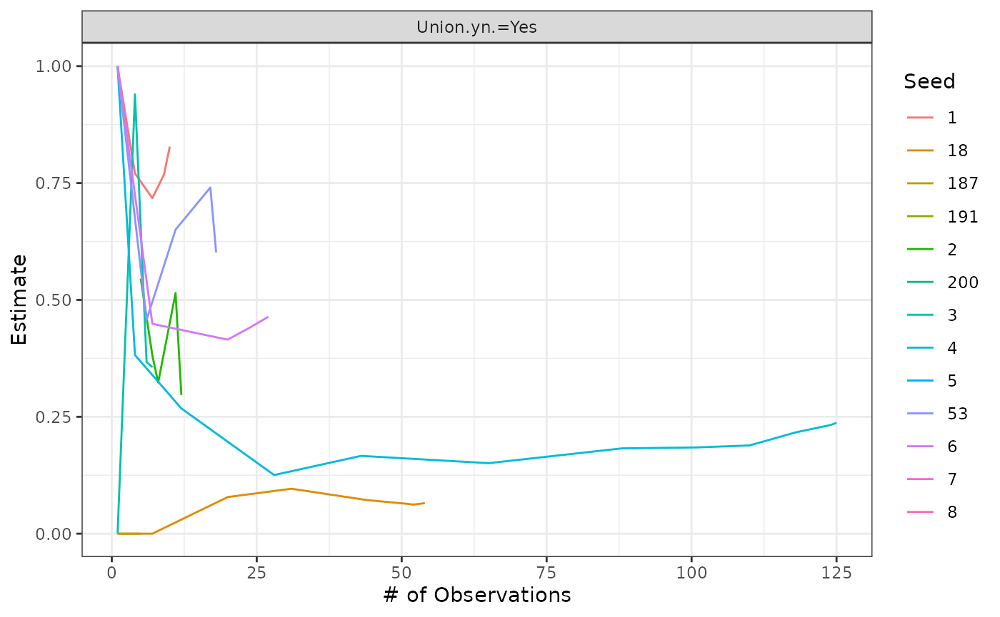

Respondent Driven Sampling (RDS) is an improvement upon snowball sampling that tries to mitigate the effect of selection biases introduced into the sampling process due to the non-probabilistic selection of participants by applying smart weighting and estimation procedures based on information provided by the respondents. The calculations for those, however, are a bit cumbersome which necessitated the use of specialized software in the past for the analysis of RDS survey data. In this brief tutorial, we’ll demonstrate how similar analysis could be undertaken using the R RDS package directly making the analysis more reproducible and less dependent on error-prone point-and-click software.
To quote from the RDS homepage:
While data requirements for RDS analysis are minimal, there are three pieces of information which are essential for analysis (RDS analysis CANNOT BE PERFORMED without these fields for each respondent):
- Personal Network Size (Degree) - Number of people the respondent knows within the target population.
- Respondent’s Serial Number - Serial number of the coupon the respondent was recruited with.
- Respondent’s Recruiting Serial Numbers - Serial numbers from the coupons the respondent is given to recruit others.
For illustration purposes, we’ll use a subset of the New York jazz players dataset (nyjazz.csv) from Heckathon’s early research into the subject.
If Heckathon had used KoBo for data collection, their xlsform would’ve looked similar to this:
xlsform.survey <- read_csv("https://gist.githubusercontent.com/galalH/b7d8bed9192626da2631dd59c1b46d5f/raw/1e118c23597cacbdf04dee54ec299805fcd8bd7b/rds-survey.csv")
DT::datatable(xlsform.survey, options = list(pageLength = nrow(xlsform.survey)))
xlsform.choices <- read_csv("https://gist.githubusercontent.com/galalH/b7d8bed9192626da2631dd59c1b46d5f/raw/1e118c23597cacbdf04dee54ec299805fcd8bd7b/rds-choices.csv")
DT::datatable(xlsform.choices)And here’s an overview of the collected data:
data <- read_csv("https://raw.githubusercontent.com/galalH/RDS/master/inst/extdata/nyjazz.csv")
# minor data cleaning
data <- data %>% select(-X1) # %>% mutate(across(ends_with("."), as.factor))
# encode variables
data <-
data %>%
mutate(
Gender.MF. = c("Male", "Female")[Gender.MF.],
Race.WBO. = c("White", "Black", "Other")[Race.WBO.],
Airplay.yn. = c("Yes", "No")[Airplay.yn.],
Union.yn. = c("Yes", "No")[Union.yn.])
glimpse(data)## Rows: 264
## Columns: 16
## $ id <dbl> 1, 2, 3, 4, 5, 6, 7, 8, 9, 10, 11, 12, 13, 14, 15, 16, 1…
## $ network.size <dbl> 350, NA, 585, 400, 150, 100, 300, 700, 300, 200, 200, 30…
## $ own.coupon <dbl> NA, NA, NA, NA, NA, NA, NA, NA, 14256002, 14250013, 1425…
## $ coupon.1 <dbl> 14250004, 14250007, 14250010, 14250025, 14250022, 142500…
## $ coupon.2 <dbl> 14250005, 14250008, 14250011, 14250026, 14250023, 142500…
## $ coupon.3 <dbl> 14250006, 14250009, 14250012, 14250027, 14250023, 142500…
## $ coupon.4 <dbl> 14256002, 14256003, 14256004, 14256009, 14256008, 142560…
## $ coupon.5 <dbl> NA, NA, NA, NA, NA, NA, NA, NA, NA, NA, NA, NA, NA, NA, …
## $ coupon.6 <dbl> NA, NA, NA, NA, NA, NA, NA, NA, NA, NA, NA, NA, NA, NA, …
## $ coupon.7 <dbl> 901, 902, 903, 904, 905, 906, 907, 908, 909, 9010, 9011,…
## $ Gender.MF. <chr> "Male", "Male", "Female", "Female", "Male", "Male", "Mal…
## $ Race.WBO. <chr> "White", "Black", "Other", "Black", "White", "Other", "B…
## $ Age <dbl> 40, 64, 41, 77, 33, 31, 70, 49, 38, 37, 50, 41, 51, 46, …
## $ Degree <dbl> 350, NA, 585, 400, 150, 100, 300, 700, 300, 200, 200, 30…
## $ Airplay.yn. <chr> "Yes", "Yes", "Yes", NA, "Yes", "No", "Yes", "Yes", "Yes…
## $ Union.yn. <chr> "Yes", "No", "No", "Yes", "No", "Yes", "Yes", "Yes", "No…Before proceeding with the analysis, we first need to prepare the data in the format expected by the package. Usually that means adding a column with the id (=coupon number) of the person who recruited each respondent into the survey.
data <-
data %>%
mutate(recruiter.coupon = rid.from.coupons(data,
subject.coupon = "own.coupon",
coupon.variables = paste0("coupon.", 1:7),
subject.id = "id"))Now we can pass our data-frame to as.rds.dataframe() which adds a bunch of attributes that tell other functions in the package where to find the relevant variables.
data <- as.rds.data.frame(data,
id = "id",
recruiter.id = "recruiter.coupon",
network.size = "network.size",
population.size = c(min = 8000, mid = 10000, high = 15000))The function also runs a number of validation checks to spot any issues with the data before letting you go any further. If you get an error here, make sure that you’ve passed the correct variables into the last two functions. Otherwise, it’s possible that there were errors on the part of the respondents when filling in their coupon numbers which broke the deriviation of recruiters from respondent coupons. There’s no way to fix that apart from manually inspecting and editing the data, or throwing out the erroneous records. This is a limitation of how the coupon numbers are generated in KoBo.
plot(data)Questions to ask when diagnosing recruitment trees:
Answering that last one requires producing multiple variants of the recruitment tree where vertices are colored according to different demographic variables to measure if “likes recurit likes”. Here’s an example using the race variable in the dataset which shows that white people almost exclusively recruit other white respondents:
plot(data, vertex.color = "Race.WBO.")Underneath the hood, plot() calls reingold.tilford.plot() which allows for customizing the color, size, and labels of the vertices as desired. See the function documentation for more details and pass the arguments into plot().
There are five more plots to explore that could provide us insight into the recruitment process:
plot(data, plot.type = "Network size by wave")
plot(data, plot.type = "Recruits by wave")
plot(data, plot.type = "Recruits per seed")
plot(data, plot.type = "Recruits per subject")Questions to ask when interpreting the charts:
The nyjazz dataset comes with three control variables (age, gender, and race) and three outcome variables (degree, airplay, and union membership). Let’s say we were interested in estimating the proportion of jazz players who were union members:
(est <- RDS.bootstrap.intervals(data, outcome.variable = "Union.yn."))##
## Note: Using the data's mid population size estimate: N = 10000
## Using 213 bootstrap samples.## Gile's SS Estimate for Union.yn.
## Estimate (%) 95% Interval Design Effect Std. Error N
## No 75.8 ( 67.65, 83.78) 2.49 4.11 158
## Yes 24.2 ( 16.22, 32.35) 2.49 4.11 105
## Total 263
## * Using population size estimate: 10000To convert that into a tidy format that we could use for further analysis and visualization:
bsresult <- attr_getter("bsresult")
est <-
left_join(
est %>% pluck("estimate") %>% enframe(name = "level", value = "est"),
est %>% pluck("interval", bsresult, "se_estimate") %>% enframe(name = "level", value = "se"))And then we can plot it like any other dataset:
est %>%
ggplot(aes(level, est)) +
geom_col() +
geom_errorbar(aes(ymin = est-se, ymax = est+se)) +
scale_y_continuous(labels = scales::percent) +
theme_minimal(base_family = "Lato") +
labs(x = NULL, y = NULL, title = "Union Membership of NYC Jazz Players")Or if we wanted to compare union membership by gender:
(est <- bootstrap.contingency.test(data, row.var = "Gender.MF.", col.var = "Union.yn.", table.only = TRUE))## No Yes
## Female 45.95878 11.90970
## Male 148.84615 57.28537The result is in absolute counts. To convert it to percentages, we’d have to divide by the number of observations:
est/nrow(data)## No Yes
## Female 0.1740863 0.04511252
## Male 0.5638112 0.21699003But then we’d have to generate a mosaic plot if we wanted to display the two dimensions.
It’s easier to just plot the absolute counts:
est %>%
as_tibble(rownames = "level") %>%
pivot_longer(-level, names_to = "member", values_to = "n") %>%
ggplot() +
geom_col(aes(level, n, fill = member)) +
theme_minimal(base_family = "Lato")Because of the way RDS works, standard errors and design effect estimates alone do not tell the whole story about the accuracy of your estimates as you’d expect from any other survey. Two heuristics were developed to capture part of the uncertainty beyond the data.
Convergence plots help to determine whether the final RDS estimate is biased by the initial convenience sample of seeds. If the estimates shown in the plots do not level off as the sample size increases then the current estimate is probably biased by the choice of seeds. It is recommended to create a convergence plot of all traits of interest during the research process and extend sampling if the estimate has not stabilized.
convergence.plot(data, outcome.variable = "Union.yn.")This shows that the sample estimate has successfully converged to the true prevalence rate in the population.
Bottleneck plots, on the other hand, are used to asses whether the population of interest contains distinct sub-communities that could bias the RDS estimate. If the sub-communities tend to recruit from within (i.e. exhibit homophily) then the choice of seeds may generate a biased sample. If the sub-communities are different with respect to the population characteristic of interest then the RDS prevalence estimate may also be biased.
bottleneck.plot(data, outcome.variable = "Union.yn.")## [1] "1"
## [1] "2"
## [1] "3"
## [1] "4"
## [1] "5"
## [1] "6"
## [1] "7"
## [1] "8"
## [1] "18"
## [1] "53"
## [1] "187"
## [1] "191"
## [1] "200"
Each line here represents the recruitment chain starting from a given seed. If the RDS sample were truly representative of the overall population, then all the lines would have converged around the sample estimate. Seeing as that is not the case here, the estimates for union membership from this survey cannot be taken as reliable estimates of union membership in the overall population.